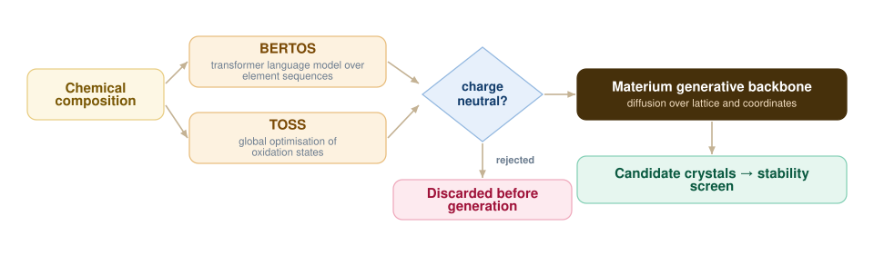

CrysLLMGen — Generating Crystals That Are Electronically Plausible
Generative models for inorganic crystals are good at geometry and much weaker on chemistry: they will happily produce arrangements that are charge-imbalanced or physically unrealistic. CrysLLMGen puts oxidation-state prediction inside the generation loop so charge neutrality is a constraint rather than an afterthought.

The bottleneck this addresses
The hard part of material informatics is not producing a structure — it is producing one that could actually exist. Current generative models routinely violate charge neutrality and place atoms in arrangements no chemist would accept. Filtering those out afterwards wastes most of what the model generates.
Oxidation states as the constraint
My contribution was integrating BERTOS and TOSS to predict high-accuracy oxidation states, and wiring their output into the generation pipeline. BERTOS treats a composition as a sequence and predicts oxidation states the way a language model predicts tokens; TOSS approaches the same problem as global optimisation. Using them together gives a cross-check that neither provides alone.
With oxidation states in hand, charge neutrality becomes checkable before a structure is generated rather than after — so the generator spends its capacity on candidates that are electronically stable, not merely geometrically plausible.
Coupling to the generative backbone
Those predictors are coupled to the Materium codebase, which lets the framework filter and refine generated structures as they emerge. The pipeline supports inverse design in the proper sense: start from a desired property and work backward to atomic coordinates, rather than generating broadly and screening afterwards.
Why it matters downstream
Every implausible structure that never gets generated is lab time not spent trying to synthesise something that cannot exist. Tightening the chemistry at generation time is the cheapest place in the whole pipeline to apply that constraint.